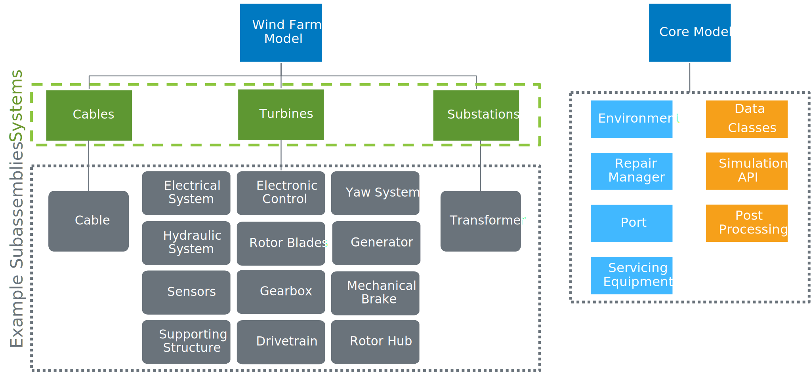

WOMBAT - Windfarm Operations and Maintenance cost-Benefit Analysis Tool#


Overview#
The WOMBAT framework is designed to provide an open source tool adhering to FLOSS principles for the wind farm lifecycle research community. Specifically, WOMBAT is meant to serve as a what-if, or scenario-based, simulation tool, so that you can model the trade-offs in decision-making for the operations and maintenance phase of a wind farm.
As a supplement to this documentation site, there is also an NREL Technical Report that goes through much of the design and implementation details available at: https://www.osti.gov/biblio/1894867. If you use this software, please cite it using the following BibTeX information, or in commonly used citation formats here.
@techreport{hammond2022wombat,
title = {Windfarm Operations and Maintenance cost-Benefit Analysis Tool (WOMBAT)},
author = {Hammond, Rob and Cooperman, Aubryn},
doi = {10.2172/1894867},
url = {https://www.osti.gov/biblio/1894867},
place = {United States},
year = {2022},
month = {10},
institution = {National Renewable Energy Lab. (NREL)},
}
For any questions, feel free to open up an issue in the repository or email: rob.hammond@nrel.gov.
Latest Changes?#
As of v0.8, a series of bug fixes in the cable, subassembly, repair management, and servicing equipment models that ensure repairs can't happen twice under limited circumstances or that more than one repair can occur simultaneously. New features include an emissions metric and random seeding of simulations, with significant simulation speedups across the board due to using Polars for managing the weather and datetime functionality.
Please see the CHANGELOG for details!
On this site: https://wisdem.github.io/WOMBAT/changelog.html
On GitHub: WISDEM/WOMBAT
The Model in 30 Seconds Or Less#
In general, the model has 2 overarching branches: the wind farm itself (the technology strategy), and the simulation environment (the maintenance strategy). For the wind farm model we can control the varying assets (system in the code)--substations, turbines, and cables--as well as the components that comprise each asset (subassemblies in the code). This separation allows for each turbine, cable, or substation component to have its own unique failure and maintenance models.
As for the environment, this is where the discrete event simulation itself happens, in addition to logging, repair logic, and other necessary modeling pieces. The image below provides a more visual representation of this description.
High Level Architecture#
The code is largely broken up into two categories: the wind farm and objects contained within it, and the simulation and simulation environment components. The wind farm is composed of systems: substation(s), cables, and turbines, and each of those systems is composed of subassemblies (a conglomerate of components). For the simulation environment, we consider all the pieces that allow the simulation to happen such as the API, servicing equipment, repair manager to hold and pass on tasks, and results post-processing.
Simulation Architecture#
In the diagram below, we demonstrate the lifecycle of the simulation through the lifecycle of a single failure.
The maximum length of the simulation is defined by the amount of wind and wave time series data is provided for the simulation.
Each subassembly failure model is a random sampling from a Weibull distribution, so for the sake of clarity we'll consider this to be a catastrophic drivetrain failure. When the timeout (time to failure) is reached in the simulation, the subassembly's operating level is reduced to 0%, and a message is passed to the turbine level (the overarching system model).
From there, the turbine will shut off, and signal to all other subassembly models to not accrue time for their respective maintenance and failure timeouts. Then, the turbine creates a repair request and passes that to the repair manager.
The repair manager will store the submitted task and depending on the servicing equipment's maintenance strategy, a crane or vessel will be called to site.
The vessel (or crane) will mobilize and accrue time there, all the while, the turbine and wind power plant will accrue downtime. When the servicing equipment arrives at the site it will operate according to its operation limits, current weather conditions, and site/equipment-specific working hours and continue to log costs and downtime.
When the servicing is complete, the subassembly will be placed back to good-as-new condition and the turbine will be reset to operating. From there all the turbine's and drivetrain's failure and maintenance models be turned back on, and the simulation will continue on in the same manner until it reaches its user- or weather-defined ending point.
License#
Notice on the NREL application of the Apache-2 license, also found on the GitHub, along with the complete license details.
Copyright 2021 Alliance for Sustainable Energy, LLC Licensed under the Apache License, Version 2.0 (the "License"); you may not use this file except in compliance with the License. You may obtain a copy of the License at http://www.apache.org/licenses/LICENSE-2.0
Unless required by applicable law or agreed to in writing, software distributed under the License is distributed on an "AS IS" BASIS, WITHOUT WARRANTIES OR CONDITIONS OF ANY KIND, either express or implied. See the License for the specific language governing permissions and limitations under the License.